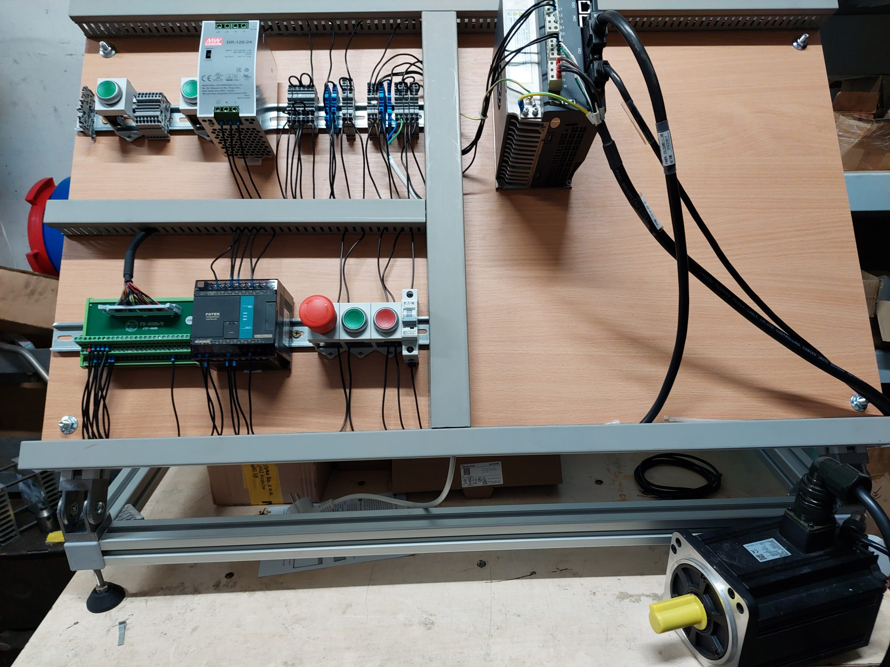
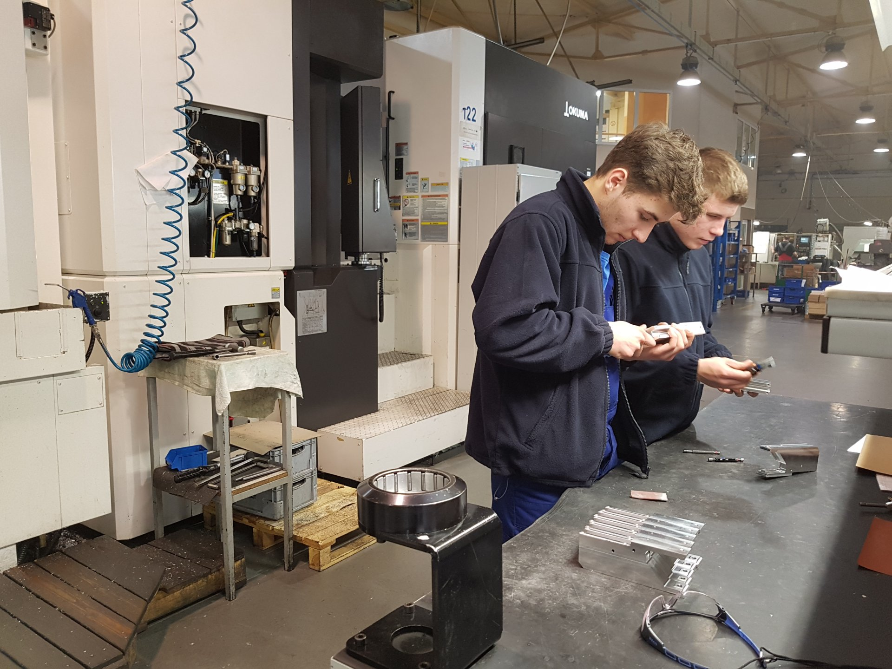

Opis: Szkoła techniczna oferująca praktyki z zakresu mechatroniki, automatyki i robotyki.
Zakres obowiązków: Współpraca w projektach z zakresu automatyki, programowanie układów mechatronicznych, wsparcie w projektach robotycznych.
Kontakt: sekretariat@zst-radom.edu.pl
Strona: zst-radom.edu.pl
Opis: Firma specjalizująca się w produkcji obrabiarek i automatyce przemysłowej.
Zakres obowiązków: Praca przy projektowaniu układów automatyki, montaż i konserwacja maszyn, wsparcie w zakresie robotyki przemysłowej.
Kontakt: kontakt@rfo.radom.pl
Strona: rfo.radom.pl
Opis: Uczelnia wyższa oferująca kursy i praktyki z zakresu mechatroniki, automatyki i robotyki.
Zakres obowiązków: Współpraca z pracownikami uczelni przy realizacji projektów z zakresu automatyki i robotyki.
Kontakt: sekretariat@uth.radom.pl
Strona: uthradom.edu.pl
Opis: Firma specjalizująca się w dostarczaniu systemów automatyki i robotyki.
Zakres obowiązków: Praca przy montażu i testowaniu systemów automatyki przemysłowej, wsparcie w programowaniu robotów przemysłowych.
Kontakt: radom@famic.pl
Strona: famic.pl
Opis: Firma zajmująca się produkcją akumulatorów, oferująca rozwiązania w zakresie automatyki przemysłowej.
Zakres obowiązków: Montaż, testowanie i konserwacja urządzeń do produkcji akumulatorów, współpraca w zakresie automatyki przemysłowej.
Kontakt: kontakt@sznajder.pl
Strona: sznajder.pl